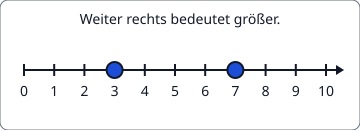

Das brauchst du für dieses Kapitel
Mit einem KI-Tutor lernen
Ein KI-Tutor erklärt dir diese Seite und hilft dir bei den Aufgaben. Wähl deinen Assistenten:
Mit Claude öffnen Mit ChatGPT öffnen Mit Mistral Vibe öffnen
Du nutzt dein eigenes Konto beim Anbieter. Der Assistent ist kein Angebot von lernapps.net: lernapps liefert nur Inhalte und Aufgaben. Die Wahl gilt für alle Seiten, nur auf diesem Gerät.
Wofür diese Seite da ist
Dieses Kapitel braucht drei Dinge: Zahlen vergleichen und ordnen, Brüche und Dezimalzahlen. Für Tabellen und Diagramme brauchst du das Ordnen von Zahlen, für Häufigkeiten Brüche und für den Mittelwert das Rechnen mit Dezimalzahlen. Zu jedem gibt es eine kurze Wiederholung. Danach folgen zwei Aufgaben und eine Checkliste.
Zahlen vergleichen und ordnen
Wenn du Daten in eine Tabelle oder ein Diagramm einträgst, musst du Zahlen vergleichen und der Größe nach ordnen. Auf der Lernlandkarte steht dafür: „Ich kann natürliche Zahlen vergleichen, am Zahlenstrahl ablesen und der Größe nach ordnen.“ Beim Vergleichen sagst du, welche Zahl größer ist. Beim Ordnen stellst du Zahlen der Größe nach hintereinander.
- Natürliche Zahlen
Die natürlichen Zahlen sind 0, 1, 2, 3 und immer so weiter.
- Zahlenstrahl
Der Zahlenstrahl beginnt bei 0 und geht nach rechts. Je weiter rechts eine Zahl liegt, desto größer ist sie. Zum Beispiel liegt 3 links von 7, also ist 3 kleiner als 7.

© CC-BY-4.0Schau, welche Markierung weiter rechts liegt.
- Stellenwert
Der Stellenwert sagt, was eine Ziffer in einer Zahl wert ist. In 385 steht die 3 für 3 Hunderter, die 8 für 8 Zehner und die 5 für 5 Einer.
Zwei Zahlen vergleichen
Welche Zahl ist größer, 385 oder 358? Vergleiche von links: Beide haben 3 Hunderter, 385 hat 8 Zehner, 358 hat 5 Zehner. Also ist 385 größer als 358.
Der Bruchbegriff
Wenn du sagen willst, welchen Teil aller Antworten eine Antwort ausmacht, brauchst du Brüche. Auf der Lernlandkarte steht dafür: „Ich kann Brüche als Teil eines Ganzen deuten und darstellen.“ Ein Bruch beschreibt einen Teil eines Ganzen, das in gleich große Teile geteilt ist. Der Nenner sagt, in wie viele gleiche Teile das Ganze geteilt ist. Der Zähler sagt, wie viele dieser Teile gemeint sind.
- Bruch
Ein Bruch wie beschreibt einen Teil eines Ganzen. Der Nenner 4 sagt, dass das Ganze in vier gleiche Teile geteilt ist, der Zähler 3, dass drei davon gemeint sind.
- Nenner
Der Nenner steht unter dem Bruchstrich. Er sagt, in wie viele gleich große Teile das Ganze geteilt ist, bei in vier Teile.
- Zähler
Der Zähler steht über dem Bruchstrich. Er sagt, wie viele dieser Teile gemeint sind, bei drei Teile.
 © CC-BY-4.0
© CC-BY-4.0Das ganze Rechteck ist das Ganze. Drei von vier gleich großen Teilen sind gefärbt.
Ein Bruch am Rechteck
Das Rechteck ist in 4 gleiche Teile geteilt, 3 sind gefärbt. Der Bruch heißt , gesprochen drei Viertel.
Rechnen mit Dezimalbrüchen
Wenn du einen Mittelwert ausrechnest, entstehen oft Kommazahlen, mit denen du rechnen musst. Auf der Lernlandkarte steht dafür: „Ich kann mit Dezimalbrüchen rechnen.“ Eine Dezimalzahl hat ein Komma; man nennt sie auch Dezimalbruch. Die Stellen hinter dem Komma sind Zehntel, Hundertstel und so weiter. Beim Addieren schreibst du Komma unter Komma, beim Teilen rechnest du wie mit ganzen Zahlen und machst Zehntel und Hundertstel, wenn ein Rest bleibt (siehe Beispiel).
- Dezimalzahl
Eine Dezimalzahl wie 3,25 hat ein Komma. Die erste Stelle nach dem Komma sind Zehntel, die zweite Hundertstel. 3,25 ist 3 Ganze, 2 Zehntel und 5 Hundertstel.
Mit Dezimalzahlen rechnen
Addieren: 3,5 + 1,25. Schreibe 3,50 + 1,25 = 4,75.
Teilen: 35 : 4. 35 : 4 = 8 Rest 3, dann 3 Ganze sind 30 Zehntel, 30 : 4 = 7 Rest 2, dann 20 Hundertstel, 20 : 4 = 5. Also 35 : 4 = 8,75.
Kannst du das?
Wenn du prüfen willst, ob du für das Kapitel bereit bist, beantworte diese zwei Aufgaben. Die erste prüft das Rechnen mit Dezimalzahlen, die zweite den Bruchbegriff. Ob du Zahlen vergleichen und ordnen kannst, siehst du an der Checkliste darunter.
Aufgabe
Lösung
Richtige Antwort: 6,55
Bei 3,75 + 2,80 ergeben die Hundertstel 5, die Zehntel 7 + 8 = 15 (5 Zehntel und einen Übertrag) und die Ganzen 3 + 2 + 1 = 6. Das Ergebnis ist 6,55.
Aufgabe
Lösung
sechs Achtel
Das sind die roten und blauen Stücke zusammen. Gefragt ist der weiße Teil.
zwei Achtel richtige Antwort
Rot und blau sind zusammen 2 + 4 = 6 Stücke. Es bleiben 8 − 6 = 2 Stücke von 8, das sind zwei Achtel.
zwei Sechstel
Das Ganze ist das ganze Band, also 8 Stücke, nicht nur die 6 gefärbten. Der Nenner ist 8.
vier Achtel
Das sind nur die blauen Stücke. Gefragt ist der weiße Teil.
Der Nenner ist die Zahl aller Stücke, 8. Der Zähler ist die Zahl der weißen Stücke, 8 − 2 − 4 = 2.
Wenn du nicht sicher warst, schau dir den Baustein auf der Lernlandkarte an: Zahlen vergleichen und ordnen, Bruchbegriff und Rechnen mit Dezimalbrüchen.
Du bist bereit, wenn du …
- natürliche Zahlen vergleichen, am Zahlenstrahl ablesen und der Größe nach ordnen kannst,
- Brüche als Teil eines Ganzen deuten und darstellen kannst,
- mit Dezimalbrüchen rechnen kannst.
Bei einem Punkt unsicher? Lies den Abschnitt oben noch einmal und schau dir den Baustein auf der Lernlandkarte an (Links unter den Aufgaben). Sonst geht es mit der Umfrage der Klasse 6a weiter.
Fehler gefunden oder eine Idee für diese App?